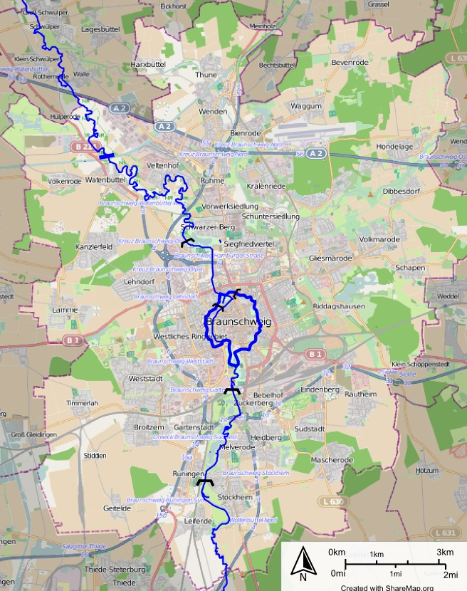
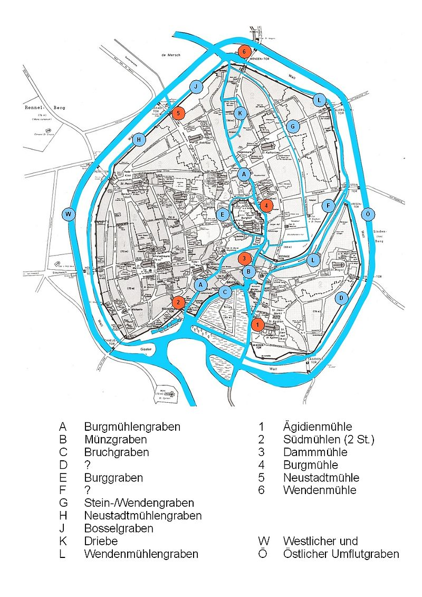
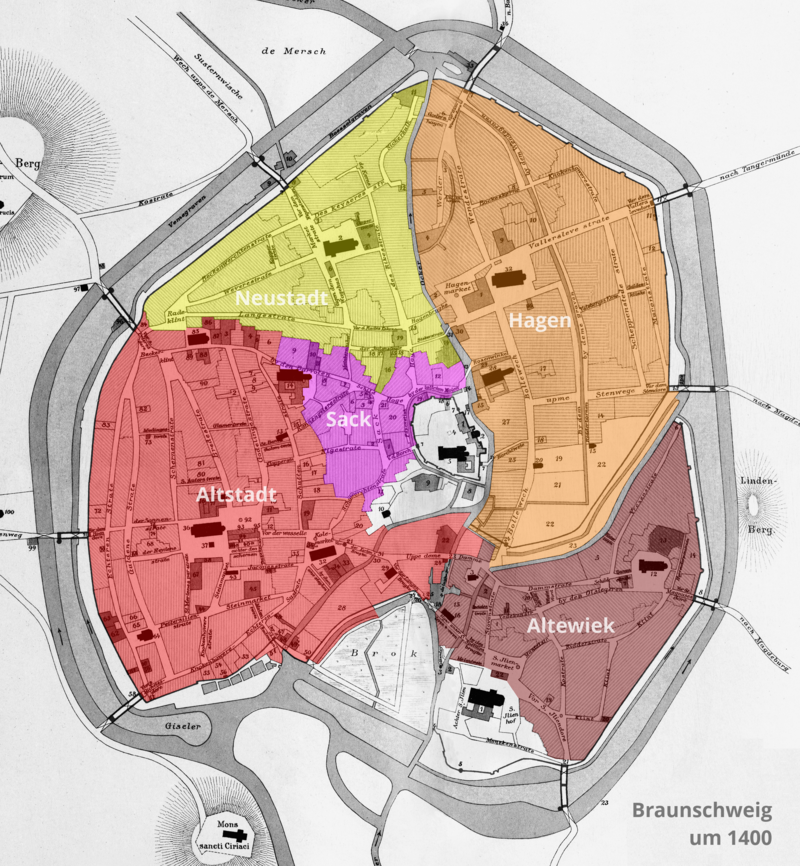

布伦瑞克奥克河
奥克河是德国下萨克森州一条一百多公里的河，自德国中部的哈尔茨山起，自南向北流。尽管不算很长，但对城市布伦瑞克来说，却是最最重要的一条河。
下图中可以看到，Oker河在布伦瑞克的部分呈一个环形，其形因其实半是自然半是人工。Oker河的布伦瑞克段原本多分支，密布成网状，形成很多河岛，那时的布伦瑞克是一个沼泽洪泛区，人们只能在海拔高于七十米的地方分别建立一些城堡、修道院和居民区1。

Figure 1: 布伦瑞克奥克河
在十二世纪时德意志著名王公狮子亨利把布伦瑞克作为他的首府，很是做了一番城市建设，加固了五个市区（Weichbild）2的城墙、护城河，改掉旧河道，挖出新河道。当时，Hagen区的水由弗里斯兰移民排出，现在的Friesenstraße由此得名。于是到十三世纪，布伦瑞克的内城已经形成了现在的样子。
有趣的是我们可以看出河流的分割对人类聚集地的影响。布伦瑞克1400年的五个市区各有自己的市政府和教堂，是相对独立的区块，而五个分区的分界往往就是奥克河。

Figure 2: 布伦瑞克公元1400年的奥克河道和五个市区3